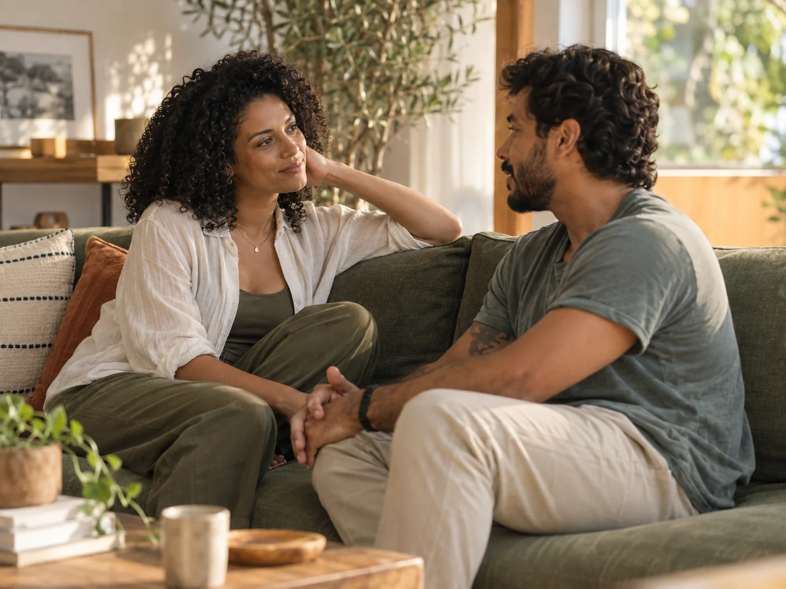
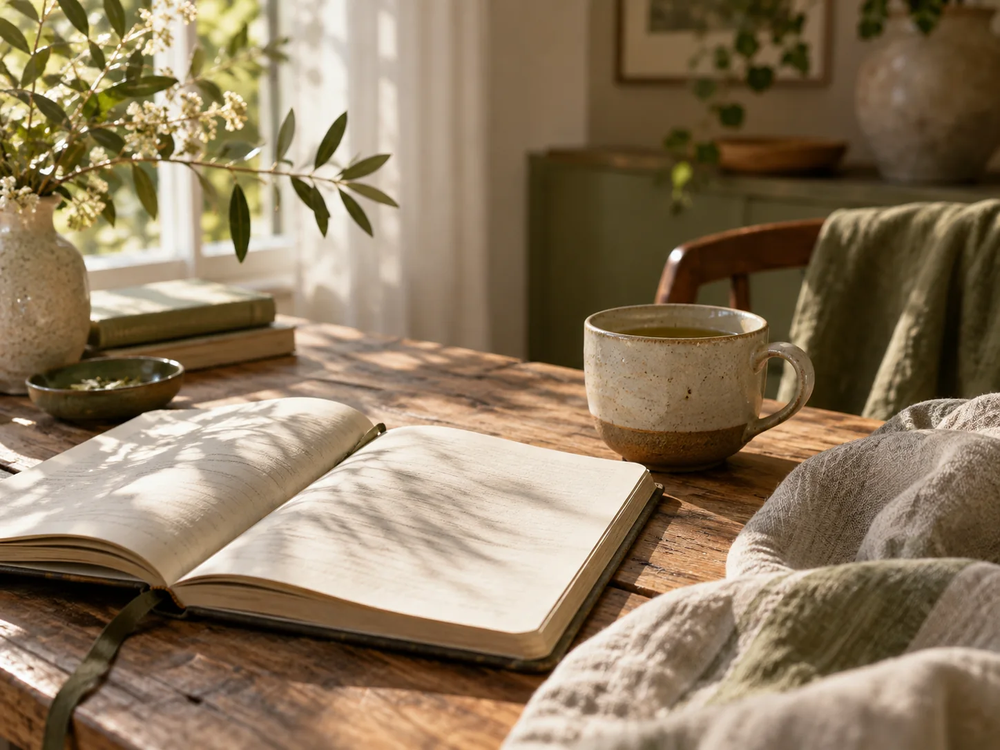

01 / 04
Psicoterapia individual
Um espaço para conhecer emoções, desafios e novos caminhos.
CUIDADO EMOCIONAL · VIDA EM EQUILÍBRIO
Escuta atenta, presença e caminhos possíveis para atravessar cada fase da vida no seu próprio tempo.
UM NOVO JEITO DE SE OUVIR
A Lume nasce da ideia de que sentir-se melhor começa em um lugar simples: ser ouvido com atenção e respeito.
NOSSA ABORDAGEM
Uma relação de confiança abre espaço para compreender emoções, perceber padrões e construir novas possibilidades. Aqui, o processo acontece com delicadeza e clareza.
COMECE POR AQUI
Não é preciso ter todas as respostas antes de começar. O primeiro contato é um espaço para entender suas dúvidas e encontrar a melhor forma de seguir.
Conte brevemente o que você procura.
Alinhamos expectativas, formato e disponibilidade.
Iniciamos os encontros com tempo para escutar e compreender.
QUEM VAI TE ACOLHER
Acredito que o cuidado começa quando alguém pode se sentir visto de verdade.
Esta é uma apresentação conceitual criada para demonstrar uma experiência digital de terapia. A identidade, a trajetória e as imagens de Helena Azevedo são fictícias.
FORMAS DE CUIDADO
Possibilidades de acompanhamento pensadas para acolher diferentes histórias e necessidades.
Um espaço para conhecer emoções, desafios e novos caminhos.

Conversas que ajudam a fortalecer a escuta e os encontros.
Práticas de presença e autocuidado para a vida cotidiana.

O cuidado onde você estiver, com privacidade e flexibilidade.
AVALIAÇÃO SIMULADA · PROJETO CONCEITUAL
“Encontrei um espaço de escuta com tempo, respeito e leveza para organizar minhas ideias.”
Depoimento fictício para demonstrar o layout. Não representa paciente real nem avaliação publicada no Google.
PARA LER COM CALMA
Temas ilustrativos sobre cuidado emocional, relações e cotidiano.
Uma pausa pode abrir espaço para perceber o que realmente importa.
Gestos simples para atravessar o dia com mais atenção.
O que muda quando há espaço para conversar de verdade.
Títulos e resumos ilustrativos; artigos completos não estão publicados nesta demonstração.
ONDE NOS ENCONTRARÍAMOS
Atendimento presencial em Cidade Exemplo, SP. Endereço fictício para fins de demonstração; nenhuma rota real está vinculada a esta página.
AINDA TEM DÚVIDAS?
É um contato inicial para entender dúvidas, formato e disponibilidade. Nesta demonstração não existe agendamento real.
Sim, o layout apresenta formatos presencial e online como exemplos de serviço.
Não. Um site real poderia orientar essa escolha durante o primeiro contato.
Não. A Lume, a profissional, os relatos e a localização foram criados para o portfólio.
UM PRIMEIRO PASSO
Um convite visual para imaginar uma experiência de cuidado mais humana.
Projeto demonstrativo · nenhum contato será enviado